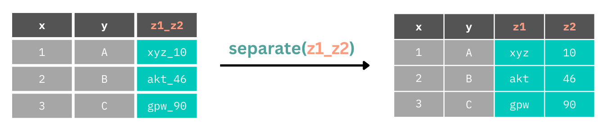
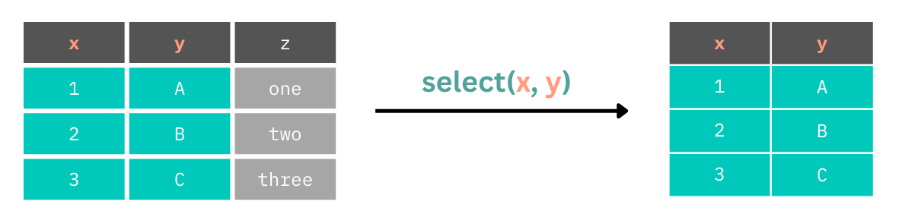
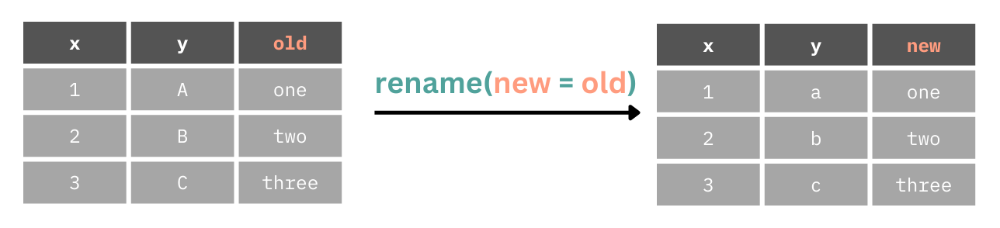
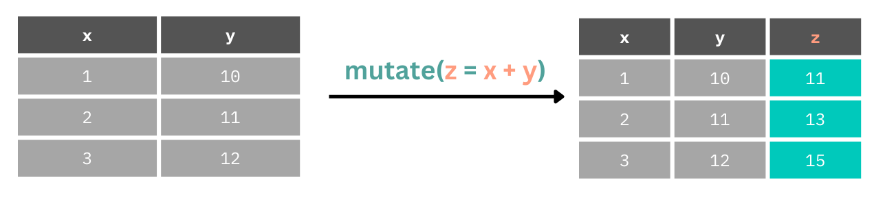
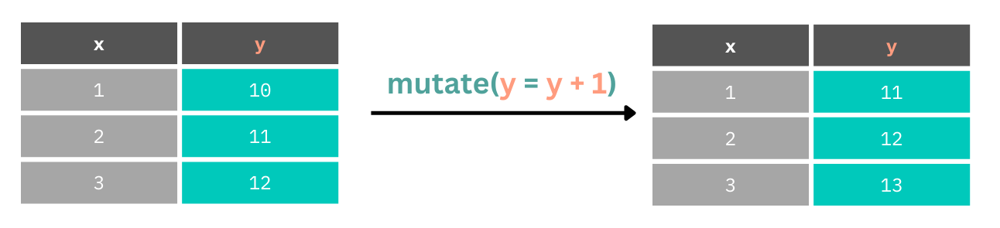
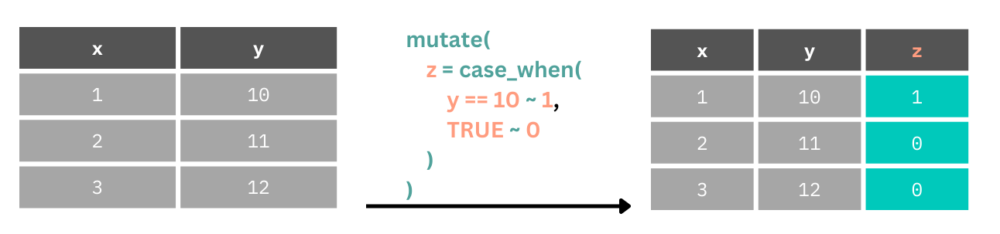
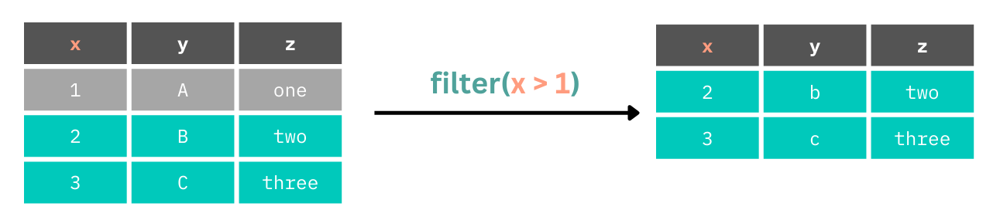
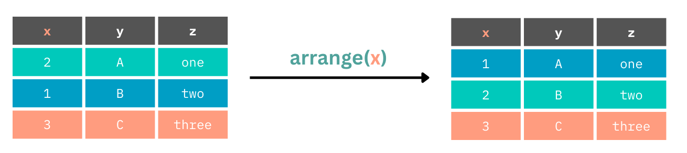
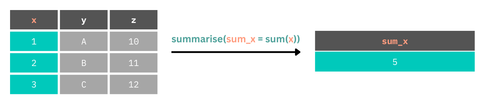
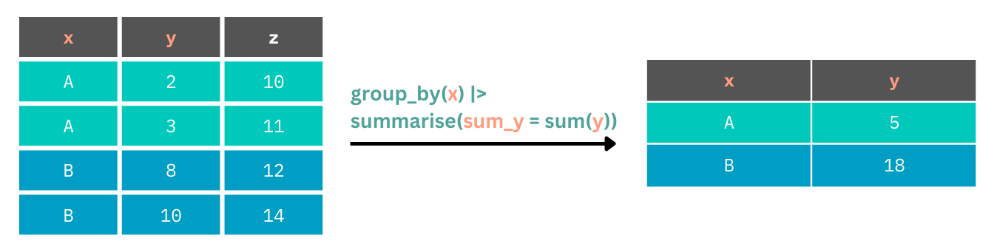

library(tidyverse) # readr, dplyr and other packages
library(here) # working with file paths
library(janitor) # cleaning column names
library(lubridate) # working with datetimes3 Transforming Data
Getting data in the correct format for data visualisation and statistical analysis encompasses a large part of the data analysis pipeline. In this chapter we’ll focus on transforming data, particularly with respect to a single table of data. To do this, we will focus on the main processes involved in transforming data to reading it in from an external file, transforming the data in various ways, and then saving the data to a new, external file. We’ll cover:
Reading in data sets using the
read_family of functions, e.g.read_csv().Renaming columns with
clean_names()andrename().Subsetting and reordering data sets with
select().Filtering the data set to certain rows/observations with
filter().Creating and transforming columns with
mutate().Creating summaries of variables with
summarise().
Most of these functions can be applied to subgroups of your data with group_by(). For example, when combined with summarise() we can create descriptive statistics for unique groups in our data set.
3.1 Reading Data
Prior to this chapter, we’ve used inbuilt data sets or created data within R to show off the functionality of R. However, in a real research context you’ll often be required to work with data from an external file. Thankfully, several packages allow us to read in and write to a wide range of files.
3.1.1 Reading Data into R from an External Source
The readr package in the tidyverse comes with several functions using the read_*() prefix. These are focused on reading in files that aren’t saved using a proprietary format. Generally, it’s a good idea to use one of these formats as you can be sure anyone, anywhere with access to a computer can work with these files. While many have access to software like Microsoft Excel, you’re still excluding those who don’t have access to this paid software if you share data in this format. For that reason, to engage properly in Open Science it’s best to use a file format like .csv to allow the greatest number of people to access your data. Here are the open file formats supported by readr:
The readr package allows you to read rectangular data into R from delimited files (e.g. .csv, .tsv). Here are just a few of the main functions available to you in readr:
read_csv(): comma-separated values (CSV).read_tsv(): tab-separated values (TSV).read_csv2(): semicolon-separated values with,as the decimal mark.read_delim(): delimited files (CSV and TSV are important special cases).read_table(): whitespace-separated files.
Sometimes, however, working with proprietary data formats can’t be avoided. In this case, we’re not out of luck. We can use the haven package to read these files into R. From here, it’s good practice to save the file in an open format. haven gives you access to:
If you’re working proprietary data formats, use haven which has:
read_sav(): SPSS data files.read_dta: Stata data files.read_sas(): SAS data files.
If working with Microsoft Excel files, you can use readxl which has the read_excel() function and others for working with older Excel file types.
All of these functions expect the path to your file as the input to the function. If using an RStudio Project we can specify a file path to the file in our project folder using relative file paths to increase the computational reproducibility of our reports.
First we need some data. I made a messy version of real data from Dunne et al. (2023): Uncovering the social determinants of brain injury rehabilitation1. This data is stored as a .csv file in https://github.com/gpwilliams/ds-psych_course. To follow along, download the repository from GitHub and open the exercises file in 03_transforming-data or make your own Quarto document within the folder.
3.1.1.1 Reading Our Data
Load the packages once per session. Ensure that you have already installed each package once on your computer using install.packages() before you try to load the packages using library().
Assuming you’re working from the ds-psych_course folder, read the data from the data sub-folder. When we assign this data to the object raw_data we have created a tibble within R that we can work with.
Note
Note that when working with your data set within R this doesn’t change the external data you’ve just read in. You can only change this data if you overwrite it using one of the write_*() functions. Avoid doing that and you’re safe to break the data in any way and still have a recoverable copy of your data. For this reason it’s encouraged to leave your raw data untouched and only save your transformed, cleaned, or filtered data to new files.
raw_data <- read_csv(here("data", "bi-loneliness.csv"))Rows: 29 Columns: 45
── Column specification ────────────────────────────────────────────────────────
Delimiter: ","
chr (32): PID, time, progress, Gender, Region, Marital Status, Living Arrang...
dbl (13): Age, BRS1, BRS2, BRS3, BRS4, BRS5, BRS6, DJG_1, DJG_2, DJG_3, DJG_...
ℹ Use `spec()` to retrieve the full column specification for this data.
ℹ Specify the column types or set `show_col_types = FALSE` to quiet this message.You will get a message telling you about the data types that have been detected for each column. Nicely, readr looks up each column and determines a data type for the columns. If a column contains numbers it’s saved as a double (numeric) column. If a column contains even one character, it will be read in as a character column. This can be changed manually if you need to change data types. We will look at this later in this chapter.
3.1.2 Inspecting Your Data
With any data set, it’s important to understand the columns. Either print it out by typing the name of the data set, here raw_data in the console, or print the transposed data set with glimpse()
glimpse(raw_data)Rows: 29
Columns: 45
$ PID <chr> "26", "27", "28", "29", "30", "A2", "A3", "C", "…
$ time <chr> "2018-03-22 23:06:11_2018-03-23 00:25:51", "2018…
$ progress <chr> "FINISH", "no", "END", "ethics", "ethics", "END"…
$ Gender <chr> "M", "M", "F", "M", "M", "male", "M", "M", "M", …
$ Age <dbl> 54, 54, 37, 51, 52, 39, 47, 53, 68, 50, 46, 55, …
$ Region <chr> "East", "Scotland", "South East", "West Yorkshir…
$ `Marital Status` <chr> "Married", "Married", "Married", "Single", "Marr…
$ `Living Arrangements` <chr> "With wife", "With wife", "With husband and todd…
$ `Primary Carer` <chr> "None", "None", "None", "None", "Wife", "None", …
$ Employment <chr> "Medically Retired", "Medically Retired", "Long …
$ `Time Since BI` <chr> "6 (2015)", "3 (2018)", "5 (2016)", "23 (1998)",…
$ `BI Severity` <chr> "Mild", "Severe", "Mild", "Moderate", "Severe", …
$ Vision <chr> NA, NA, "X", NA, "X", "x", NA, NA, "X", NA, NA, …
$ Speech <chr> "X", "X", NA, NA, NA, "x", NA, NA, "X", "X", "X"…
$ Motor <chr> NA, "X", "X", NA, NA, "x", "X", NA, "X", "X", "X…
$ Memory <chr> NA, NA, NA, NA, "X", NA, "X", NA, "X", "X", NA, …
$ Cognitive <chr> "X", "X", NA, NA, "X", NA, NA, "X", NA, "X", NA,…
$ Pain <chr> NA, NA, "X", NA, NA, NA, NA, NA, NA, NA, NA, NA,…
$ BRS1 <dbl> 5, 4, 3, 4, 2, 5, 5, 4, 5, 5, 4, 4, 2, 4, NA, 4,…
$ BRS2 <dbl> 4, 4, 2, 4, 1, 5, 5, 1, 4, 4, 2, 2, 2, 1, NA, 2,…
$ BRS3 <dbl> 3, 4, 1, 4, 5, 2, 5, 4, 4, 5, 2, 2, 2, 2, NA, 5,…
$ BRS4 <dbl> 4, 4, 2, 4, 2, 5, 5, 5, 4, 4, 4, 4, 2, 4, NA, 4,…
$ BRS5 <dbl> 4, 2, 2, 3, 1, 4, 5, 4, 4, 3, 4, 4, 2, 2, NA, 4,…
$ BRS6 <dbl> 5, 2, 1, 3, 2, 4, 5, 5, 4, 4, 2, 5, 3, 5, NA, 4,…
$ DJG_1 <dbl> 1, 0, 0, 0, 1, 0, 0, 1, 0, 1, 1, 0, 1, 1, NA, 1,…
$ DJG_2 <dbl> 1, 0, 1, 1, 1, 1, 1, 0, 0, 1, 0, 1, 0, 1, NA, 1,…
$ DJG_3 <dbl> 1, 0, 0, 1, 0, 1, 1, 1, 1, 1, 1, 1, 1, 1, NA, 1,…
$ DJG_4 <dbl> 0, 1, 0, 0, 0, 1, 1, 0, 1, 1, 1, 1, 1, 1, NA, 0,…
$ DJG_5 <dbl> 0, 0, 1, 1, 1, 0, 1, 1, 0, 0, 1, 0, 0, 0, NA, 1,…
$ DJG_6 <dbl> 0, 1, 1, 0, 1, 1, 1, 0, 1, 1, 1, 1, 1, 1, NA, 0,…
$ `WEMWBS 1` <chr> "2 - Rarely", "3 - Some of the time", "3 - Some …
$ `WEMWBS 2` <chr> "4 - Often", "2 - Rarely", "2 - Rarely", "2 - Ra…
$ `WEMWBS 3` <chr> "4 - Often", "3 - Some of the time", "2 - Rarely…
$ `WEMWBS 4` <chr> "3 - Some of the time", "4 - Often", "1 - None o…
$ `WEMWBS 5` <chr> "1 - None of the time", "2 - Rarely", "1 - None …
$ `WEMWBS 6` <chr> "5 - All of the time", "3 - Some of the time", "…
$ `WEMWBS 7` <chr> "4 - Often", "3 - Some of the time", "4 - Often"…
$ `WEMWBS 8` <chr> "3 - Some of the time", "2 - Rarely", "2 - Rarel…
$ `WEMWBS 9` <chr> "2 - Rarely", "3 - Some of the time", "3 - Some …
$ `WEMWBS 10` <chr> "3 - Some of the time", "2 - Rarely", "2 - Rarel…
$ `WEMWBS 11` <chr> "5 - All of the time", "3 - Some of the time", "…
$ `WEMWBS 12` <chr> "3 - Some of the time", "3 - Some of the time", …
$ `WEMWBS 13` <chr> "1 - None of the time", "2 - Rarely", "1 - None …
$ `WEMWBS 14` <chr> "3 - Some of the time", "2 - Rarely", "3 - Some …
$ enjoymentFOLLOW <chr> "7-no", "6-yes", "4-yes", "0-no", "4-no", "5-no"…That’s a lot of columns! Broadly, this data set has one row of data for each participant and tracks some of the demographics of the participants. As the data set concerns brain injury survivors, we also have information on the traumatic brain injuries of the participants, including the time since the brain injury and severity of brain injury. Along with this we have columns coding for types of impairments or disturbances as a result of brain injury (i.e. visual, speech, motor, memory, or cognitive, pain). Finally, we have ratings for two questionnaires, the BRS (Brief Resilience Scale), DJG (De Jong Gierveld scale for emotional and social loneliness), and WEMWBS (The Warwick-Edinburgh Mental Wellbeing Scales). We also have a closing question in one column that encodes two variables: whether they enjoyed the study and if they would be contactable in a follow up. We need to fix a number of issues with this data.
At this stage it is a good idea to take some time to really understand our data. What are the unique values in each column? What are the issues with the presentation that might make working with the data difficult? Using plots is a good way to visually inspect each variable.
To follow along with these examples, you might want to subset the data to remove some columns that aren’t needed. We’ll remove the WEMWBS and BRS columns along with some demographic columns just to make the print out easier to parse. At the end of this chapter, the following code will make sense:
raw_data <- raw_data |>
select(
-c(contains("WEMWBS"), contains("BRS")),
-c(Region:`BI Severity`)
)3.2 A Note on Pipes
In R, we can combine several functions to produce a result using nested code. For example, to get get counts of unique participant IDs we can combine the unique() and length() functions as follows:
length(unique(raw_data$PID))[1] 26This is fine, but can get complicated to read as you have to read in to out. The more functions we chain together the harder it can get to read the code. Instead, we can use the pipe. This allows us to write code and read it left to right. Here’s how we might use the pipe to complete the same operation as above:
raw_data$PID |>
unique() |>
length()[1] 26The pipe can be read as “and then”, so take our PID column from raw_data and then get the unique values and then get the length (or count) of them.
We will use pipes throughout this book as we now start to chain together many functions.
3.3 Separating Columns
One of the glaring issues with this data set is that we have one column, enjoymentFOLLOW which encodes two variables, whether people enjoyed the study and if they’d be contactable at a follow up, and time that encodes the start and end times for participants in the study. We can use the separate() function to split a column into two or more columns, depending on how many separate sources of data the function detects or is instructed to detect.

separate() looks for separators between data points, e.g. _ or -, and splits columns there. So, if we have many separators within our data, but we only want to split the columns at one of them, we need to be explicit in where to split the data.
Let’s fix the messy data, starting with splitting columns that contain multiple variables. First, we’ll start with enjoymentFOLLOW which has only one separator, _ between the values in the column. Using the function without specifying the separator works fine in this instance. We just need to specify the names of the new columns.
Important
Use the arrow on the table to see all columns and the pages to see all rows.
raw_data |>
separate(enjoymentFOLLOW, into = c("enjoyment", "follow_up"))We now have separate columns for each variable. Next, we need to fix time. What happens if we don’t specify a separator?
raw_data |>
separate(time, into = c("start_time", "end_time"))Warning: Expected 2 pieces. Additional pieces discarded in 25 rows [1, 2, 3, 4, 5, 6, 7,
8, 9, 10, 11, 12, 13, 14, 15, 16, 17, 18, 19, 20, ...].We have start and end times, but these don’t look correct. We also have a warning saying that due to our names separate() expected two rows but created (and dropped) 25! That’s because datetimes are made up of many separators, e.g. “2018-03-22 23:06:11”. In this instance, the start and end times are separated by an underscore, e.g. “2018-03-22 23:06:11_2018-03-23 00:25:51”. We can use this to tell separate() to only split the data at this separator.
raw_data |>
separate(col = time, into = c("start_time", "end_time"), sep = "_")Now we have the expected output.
To put all of this together, we can chain multiple separation calls together with the pipe. Notice that unless we assign the result back to the variable we haven’t actually changed our data set. So, we’ll do this now.
Again, we use glimpse() to view all columns.
raw_data <- raw_data |>
separate(col = enjoymentFOLLOW, into = c("enjoyment", "follow_up")) |>
separate(col = time, into = c("start_time", "end_time"), sep = "_")3.4 Selecting Columns
Often your data set has lots of columns you won’t use. This can make working with the data more difficult and takes up memory on our computer which can slow things down. We can choose which columns to keep by listing them by name or by position within the select() function.

3.4.1 Selecting Columns to Keep
By default, select() works by keeping the columns that you list within it. Here are two examples where we use the bare column names and the index to keep the columns we’d like.
raw_data |>
select(PID, Gender, Age)raw_data |>
select(c(1, 5, 6))3.4.2 Selecting Columns to Remove
We can also select columns to remove by using - before the names or index. We can list these as between a range, e.g. 6:47 or c(Age:follow_up), or as a specific vector of indices, e.g. c(1, 2, 3) or c(PID, start_time, end_time). An example is shown below.
raw_data |>
select(-c(Age:follow_up))3.4.3 Select Helpers
For simple cases, stating the name or index of the column is fine. However, if we’re working with many columns that have a consistent naming pattern, we can make our code shorter and perhaps avoid more mistakes by using select helper functions. There are a number of select() helpers to make working with it easier:
starts_with(): keep columns starting with a specific string.ends_with(): keep columns ending with a specific string.contains(): keep columns containing a specific string.matches(): Keeps columns matching a regular expression. This is useful for complex matching.num_range(): Keeps columns with a matching prefix and a following range of numbers.
Contains is a very common select helper that you might need to use. Here, we want to select all columns that contain the string “DJG”, corresponding to the De Jong Gierveld scale for emotional and social loneliness. These columns correspond to specific questions from this scale.
raw_data |>
select(contains("DJG"))However, if we want to select only a subset of those which match a prefix but end in only specific values, we can use the num_range() function. Let’s keep columns that begin with “DJG_” and end with the values 1, 2, or 3.
raw_data |>
select(num_range("DJG_", 1:3))3.5 Renaming and Reordering Columns
3.5.1 Renaming Columns
Often when reading data into R we might want to change the column names, either because they are specified so that working with them is more difficult (e.g. those containing spaces such as `Time Since BI` which requires us to use back ticks around names to access them, e.g. raw_data$`Time Since BI`) or because they are excessively long or uninformative.
We can use the rename() function to change the name of columns. This takes the format of new = old.

Here we will make the PID column more informative by making it participant_id.
raw_data |>
rename(participant_id = PID)3.5.2 Renaming Columns Automatically
The janitor package has a function, clean_names(), which fixes irregularities in names. Mainly, it’s good practice to keep one format such as snake_case, to avoid spaces in names, and to avoid numbers at the start of column names.
raw_data |>
janitor::clean_names()3.5.3 Reordering Columns
We can also use select() to reorder columns. Either specify the names or indices of every column you’d like in the order you’d like, or you can use the everything() helper function to make this easier. To use this function, we simply state the order of columns we’d like in a specific order, then use everything() to keep every other column in the data set after those specified in the specific order.
raw_data |>
select(PID, Gender, Age, start_time, end_time, everything())3.6 Creating and Changing Columns
If we want to create or change a column, we have two options: mutate() and transmute():
mutate(): changes or creates a column, keeping all existing columns.transmute(): changes or creates a column, dropping columns not defined intransmute().
Throughout this book we’ll mainly use mutate() as it’s rare to only want to work with columns you’ve just created or changed. mutate() can consist of a simple operation on one column, using many columns to create another, or doing conditional operations within a column.
Here we create a new column by adding together values from columns 1 and y.

Let’s look at working out the birth years of the participants in the data set. The study concluded in 2022 (despite what the start_date and end_date columns tell us), so we can take the year 2022 and subtract participant ages to find their birth year.
Note
Below we use select() only to restrict the printed output for ease of viewing.
raw_data |>
mutate(
birth_year = 2022 - Age
) |>
select(PID, birth_year)We can also create columns by combining operations across multiple existing columns. Here, we create a total score for the De Jong Gierveld scale by adding each of the scores on the individual items.
Below we use select() only to restrict the printed output for ease of viewing.
raw_data |>
mutate(
djg_total = DJG_1 + DJG_2 + DJG_3 + DJG_4 + DJG_5 + DJG_6
) |>
select(contains("DJG"))Often, however, we might want to update columns by transforming values within them.

In our data set we have the problem that date times are stored as character vectors rather than date times. This means that we can’t perform any mathematical operations on the values in these columns.
If we try to get the total time participants took in the study like so, it won’t work.
raw_data |>
mutate(total_time = end_time - start_time) |>
select(contains("time"))This would also be the case if we wanted to perform a mathematical operation using a numeric and non-numeric column. To fix this, we change the data type.
Let’s update the start_time and end_time columns, converting them to date time data types. We’ll use the lubridate package for this which has the function ymd_hms() which parses character vectors in the format of year-month-day_hours-minutes-seconds to a proper date time data type.
Notice that we can also create a new column, total_time by subtracting start_time from end_time within the same mutate() call that we use to convert their data types. This column goes to the end of our data set.
raw_data |>
mutate(
start_time = ymd_hms(start_time),
end_time = ymd_hms(end_time),
total_time = end_time - start_time
) |>
select(contains("time"))
Note
If we don’t like working with decimal hours, we can change the units to minutes using e.g. units(TIBBLE$COL) <- "mins"
3.6.1 Improving Multi-Column Operations
Listing each of the columns we’d like to use when performing operations on the columns can be tedious. Let’s say we want to sum up every value in the DJG columns. How might we do this? You might assume we can use the : operator to select only the columns between DJG_1 and DJG_6 as follows:
raw_data |>
mutate(DJG_sum = sum(DJG_1:DJG_6)) |>
select(contains("DJG"))Warning: There were 2 warnings in `mutate()`.
The first warning was:
ℹ In argument: `DJG_sum = sum(DJG_1:DJG_6)`.
Caused by warning in `DJG_1:DJG_6`:
! numerical expression has 29 elements: only the first used
ℹ Run `dplyr::last_dplyr_warnings()` to see the 1 remaining warning.However, we got a warning and very unexpected output. That’s because the sum() function (and others) aren’t set up for row-wise operations. Do to this, we can use the across() function to tell mutate() that we want to perform a row-wise operation. However, c() also doesn’t work as expected here as it doesn’t like the bare or quoted column names we pass to the function. So, we update this to use c_across() to work with the bare column names.
Again, we use select() only to restrict the print output for ease of viewing.
raw_data |>
rowwise() |>
mutate(DJG_sum = sum(c_across(DJG_1:DJG_6))) |>
select(contains("DJG"))We can also use the select() helpers with c_across() to make this even cleaner.
raw_data |>
rowwise() |>
mutate(DJG_sum = sum(c_across(contains("DJG")))) |>
select(contains("DJG"))3.6.2 Using Conditionals
Finally, we can change only certain values within a column with conditionals.
Here we create a new column z.
If the value in
yis equal to 10, that row inzgets a 1.For all other values of
y(default,TRUEfor everything else), giveza 0.

Notice that in our data set we have different impairments (e.g. Vision, Speech) coded as X or NA. We can’t work with these for statistics because they aren’t numbers. But we can fix that using some conditional rules using the case_when() function.
case_when() looks for a logical operation, (e.g. when Vision == "X"), when this is TRUE you can set a value to assign to that case after the ~. We will set this to 1. We can then either specify every other case, or set a default value. In this instance we’ll set a default value where the case evaluation always results in TRUE after checking for the first case (i.e. that Vision == "X"). For all cases other than Vision == "X" we set the value to 0.
Again, we use select() only to restrict the print output for ease of viewing.
raw_data |>
select(PID, Vision) |>
mutate(
Vision = case_when(
Vision == "X" ~ 1,
TRUE ~ 0
)
)3.7 Filtering Observations
3.7.1 Filtering to Keep
We can subset our data sets by filtering it out to only contain rows where specific conditions are met using the filter() function. In the example below we filter the data set down to rows where x is greater than 1.

In our data set, we might subset it to only those who completed the study. Due to inconsistent coding, we have two values for having completed the study in the progress column, FINISH and END. We want to filter the data to people who have progress as FINISH OR END (they can’t be both), so we use the | OR operator.
raw_data |>
filter(progress == "FINISH" | progress == "END")If we have many conditions we want to meet, many OR (|) statements are verbose and can be unwieldy. We can instead use %in% to define the values in progess that we want to keep. This is TRUE if an observation is in a value that you provide.
raw_data |>
filter(progress %in% c("FINISH", "END"))We can combine these with criteria on other columns to do additional sub-setting in one filter() call.
raw_data |>
filter(
progress %in% c("FINISH", "END"),
Age > 50
)3.7.2 Filtering to Exclude
What if we have conditions we’d like to exclude from our data set rather than keep? We can do the inverse of these operations using !. Here we ask for those whose progress ISN’T FINISH or END but who are over 50.
raw_data |>
filter(
!progress %in% c("FINISH", "END"),
Age > 50
)3.7.3 A Note on Missing Values
One thing to bear in mind If you ask R if a value is equal to an NA (an unknown value) it is very literal in that it tells us it can’t know. So, this doesn’t work:
raw_data |> filter(progress == NA)Instead, we have to use is.na():
raw_data |> filter(is.na(progress))If we want values that AREN’T NAs, then we can combine is.na() and the NOT (!) operator.
raw_data |> filter(!is.na(progress))3.8 Arranging Data
While arguable one of the less important aspects of data transformation, you will sometimes want or need to arrange your data in a specific order. To do this, we can arrange rows sorted by value in a column using arrange().

This defaults to an ascending order, but we can use desc() to enforce a descending order. Compare the default and desc() versions below.
raw_data |>
select(Age) |>
arrange(Age)raw_data |>
select(Age) |>
arrange(desc(Age))3.9 Summarising Data
One very important aspect of data analysis is presenting descriptive statistics, or summaries of your data. Often this will be counts, measures of central tendency (such as the mean, median, or mode) and measures of dispersion (such as standard deviation, interquartile range, etc.). To produce these summaries we can use the summarise() function.
Here, we create a new table with a new column which is the result of a mathematical operation on every value in the original table of data.

Let’s look at getting an idea of some very basic descriptive statistics for the demographics in our data set. We’ll create a new table which contains the mean of ages in our data set.
raw_data |>
summarise(age_mean = mean(Age))However, by default this results in an error. That’s because mean() can’t compute a mean of numeric values and something that doesn’t exist NA. Instead, we can tell mean() to explicitly ignore NAs in the computation. We can do this as follows.
3.9.1 Handling Missing Values
Either within each operation.
raw_data |>
summarise(
age_mean =
mean(Age, na.rm = TRUE)
)Or within the chain of functions.
raw_data |>
drop_na(Age) |>
summarise(
age_mean = mean(Age)
)
Note
Note drop_na() only keeps complete rows if several columns are provided.
We can create many columns within our new summary table made up of operations on our original data. Here, we will create a mean and standard deviation for age along with a count of the number of observations we have in the data set (excluding NAs) using n().
raw_data |>
drop_na(Age) |>
summarise(
age_mean = mean(Age),
age_sd = sd(Age),
n = n()
)3.10 Grouped Operations
Often we might want to have these summaries made up for specific groups within our data set. We can perform grouped operations using many of the tidyverse functions. For example, we can sum up values for one column for each unique value in another column using group_by().

We pass to group_by() the name of the column containing our groups, and then proceed with our summary() function (or others) to perform the grouped operation. Let’s get the mean ages for each gender in our study.
raw_data |>
group_by(Gender) |>
summarise(age_mean = mean(Age, na.rm = TRUE))We have the grouped ages, but we have some coding issues in our data. We probably wan’t consistent labels for men and women, rather than splitting them across male/M and Female/F. We should fix this ahead of time using a conditional in mutate().
3.10.1 group_by() with other dplyr functions
group_by() works with a whole host of functions from dplyr including filter(), mutate() and others. To see how this might work, let’s filter our data to the earliest observation in start_time within each level of Gender. We’ll use the rank() function to rank order the start_time variable within each gender, and keep only the observations where rank is equal to 1.
raw_data |>
mutate(start_time = ymd_hms(start_time)) |>
group_by(Gender) |>
filter(rank(start_time) == 1)Great, we pulled out one value for each label in our data!
3.10.2 Ungrouping
If you want to perform further operations on the whole data set after your grouped operations, you need to remember to ungroup. Otherwise, your results might not be as expected. Compare the two outputs below.
Without ungrouping.
raw_data |>
mutate(
start_time =
ymd_hms(start_time)
) |>
group_by(Gender) |>
filter(rank(start_time) == 1) |>
summarise(
mean_age = mean(
Age, na.rm = TRUE
)
)3.11 Chaining Functions
We’ve seen already how we can chain many functions together using the pipe. We can combine all functions we’ve covered to do all our data transformation. We can even pipe the result of these chains into ggplot() calls. In the Section 3.13 we’ll do this, fixing all of the problems with our data before we produce any summaries or plots using the functions you’ve learned about in this chapter.
3.12 Saving Files
Finally, once you’re done cleaning your data and making summaries you can save it using the write_*() family of functions. There are the same number of write_*() functions corresponding to the read_*() functions listed above for each package. I suggest saving to a .csv file with write_csv() as any program can open .csv files. As mentioned earlier, it’s a good idea to keep your raw and cleaned data apart from one another, even in separate sub-folders. Here we save our data to the “cleaned_data” sub-folder. We should probably do this on actually cleaned data, but this is just an example. You will do this properly in Section 3.13.
write_csv(raw_data, here("cleaned_data", "bi_loneliness.csv"))3.13 Exercises
Please complete the exercises at https://github.com/gpwilliams/ds-psych_course.
I did the statistical analysis for this paper and ensured that I created more problems in the data for this book than actually existed in the data set. This allows us to show off common problems and how to fix them. Therefore, this example data set does not reflect the quality of the research or data handling practices in the project and paper.↩︎